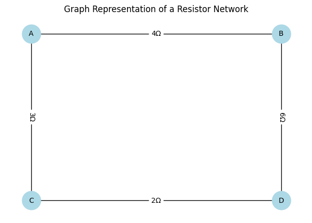

Problem 1
1. Introduction
In this problem, we explore how to compute the equivalent resistance of an electrical network using graph theory. This approach is powerful for complex circuits where standard series-parallel reduction becomes inefficient or infeasible.
Each resistor is treated as a weighted edge between two nodes, with the resistance as the weight. We then simplify the graph step-by-step until only two terminal nodes remain, connected by a single effective resistance.
2. Theoretical Foundation
We use these two fundamental rules:
- Series combination: For resistors \(R_1\) and \(R_2\) in series:
\(\(R_{eq} = R_1 + R_2\)\)
- Parallel combination: For resistors \(R_1\) and \(R_2\) in parallel:
\(\(\frac{1}{R_{eq}} = \frac{1}{R_1} + \frac{1}{R_2}\)\)
In a graph context:
- Nodes \(\rightarrow\) circuit junctions
- Edges \(\rightarrow\) resistors with weights
- Series \(\rightarrow\) degree-2 nodes
- Parallel \(\rightarrow\) multiple edges between two nodes
3. Step-by-Step Algorithm Description
Step 1: Input and Graph Construction
- Represent each resistor as an edge:
(node1, node2, resistance) - Store the edges in a graph data structure.
Step 2: Identify Reductions
- While there are more than 2 nodes:
-
Identify all parallel edges and replace them with a single edge using:
\[R_{eq}^{parallel} = \left(\sum_{i=1}^{n} \frac{1}{R_i} \right)^{-1}\] -
Identify series nodes (degree = 2) not being terminals and merge edges:
\[R_{eq}^{series} = R_1 + R_2\]
Step 3: Output Final Resistance
- When only two nodes remain (terminals), return the single edge's weight.
4. Python Implementation
import networkx as nx
import matplotlib.pyplot as plt
def series_resistance(R1, R2):
return R1 + R2
def parallel_resistance(R1, R2):
return (R1 * R2) / (R1 + R2)
R1 = 4
R2 = 6
R3 = 3
R4 = 2
G = nx.Graph()
G.add_edge("A", "B", weight=R1)
G.add_edge("B", "D", weight=R2)
G.add_edge("A", "C", weight=R3)
G.add_edge("C", "D", weight=R4)
pos = {
"A": (0, 1),
"B": (2, 1),
"C": (0, 0),
"D": (2, 0)
}
labels = nx.get_edge_attributes(G, "weight")
plt.figure(figsize=(6, 4))
nx.draw(G, pos, with_labels=True, node_color='lightblue', node_size=700, font_size=10)
nx.draw_networkx_edge_labels(G, pos, edge_labels={k: f"{v}Ω" for k, v in labels.items()})
plt.title("Graph Representation of a Resistor Network")
plt.tight_layout()
plt.show()

5. Examples. Test on Examples
Series Circuit
R1 = 2 R2 = 3 R_series = R1 + R2 print("Series Circuit:") print(f"R1 = {R1} Ω, R2 = {R2} Ω") print(f"Equivalent Resistance = {R_series} Ω\n")
Parallel Circuit
R1 = 2 R2 = 3 R_parallel = (R1 * R2) / (R1 + R2) print("Parallel Circuit:") print(f"R1 = {R1} Ω, R2 = {R2} Ω") print(f"Equivalent Resistance = {R_parallel:.2f} Ω\n")
Nested Circuit: R1 in series with (R2 || R3)
R1 = 1 R2 = 2 R3 = 2 R_parallel = (R2 * R3) / (R2 + R3) R_nested = R1 + R_parallel print("Nested Circuit:") print(f"R1 = {R1} Ω, R2 = {R2} Ω, R3 = {R3} Ω") print(f"R2 || R3 = {R_parallel:.2f} Ω") print(f"Equivalent Resistance = {R_nested:.2f} Ω")
6: Analysis (with equations)
Series:
\(\(R_{eq} = R_1 + R_2 = 2 + 3 = 5\)\)
Parallel:
\(\(R_{eq} = \frac{R_1 \cdot R_2}{R_1 + R_2} = \frac{2 \cdot 3}{2 + 3} = 1.2\)\)
Nested:
\(\(R_1 = 1,\quad R_2 = 2,\quad R_3 = 2\)\)
\(\(R_{23} = \frac{2 \cdot 2}{2 + 2} = 1,\quad R_{nested} = R_1 + R_{23} = 1 + 1 = 2\)\)
7. Performance and Improvements
- Time Complexity: Worst-case \(O(n^2)\) due to repeated edge scanning.
- Improvement: Use a union-find data structure or Kirchhoff’s laws with matrix methods for larger graphs.
8. Conclusion
This method provides a reliable and scalable way to compute equivalent resistance in complex electrical networks. By reducing the network iteratively via graph transformations, even nested series-parallel circuits become manageable, enabling automation and deeper understanding through the lens of graph theory.